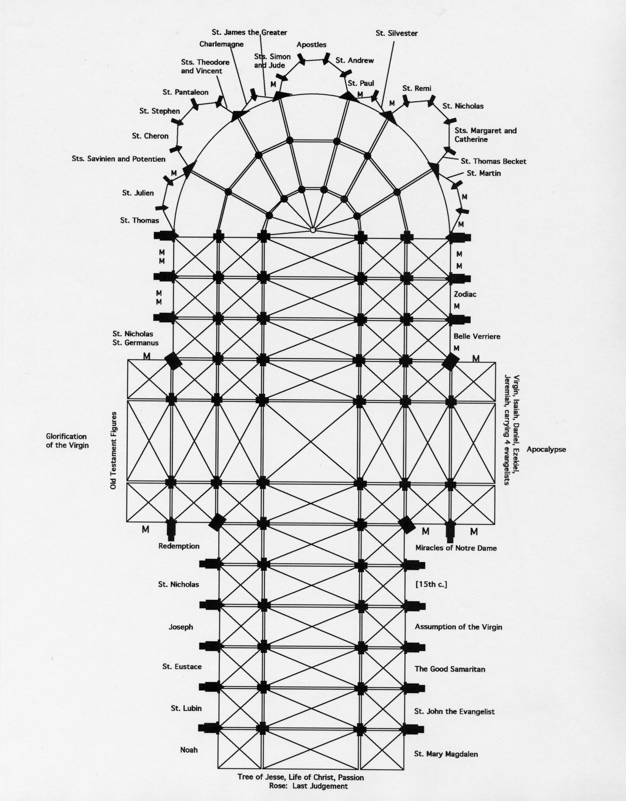
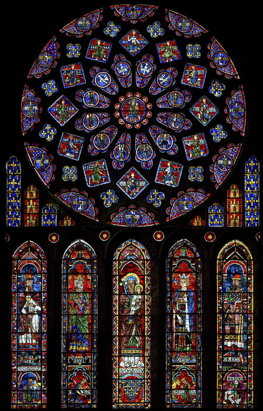
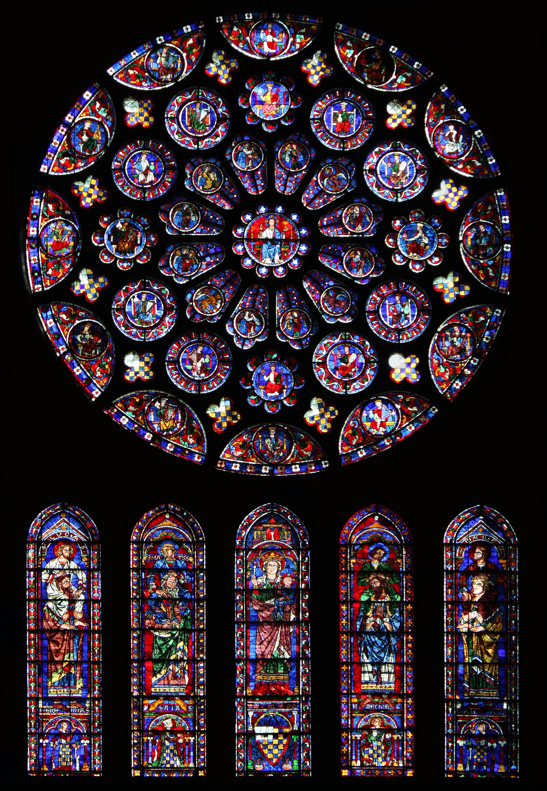
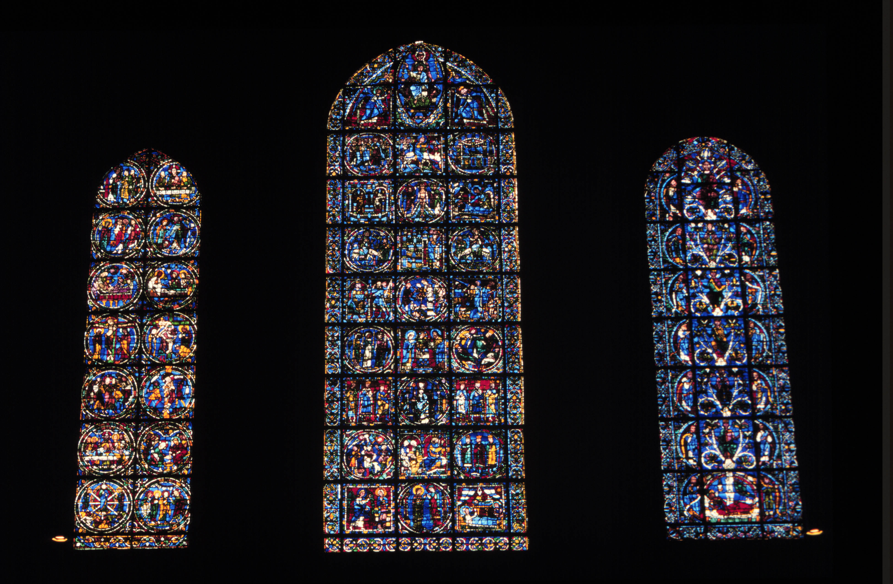
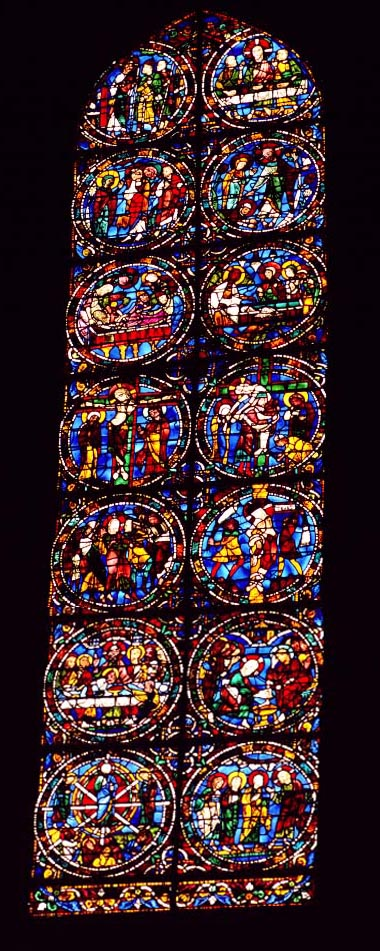
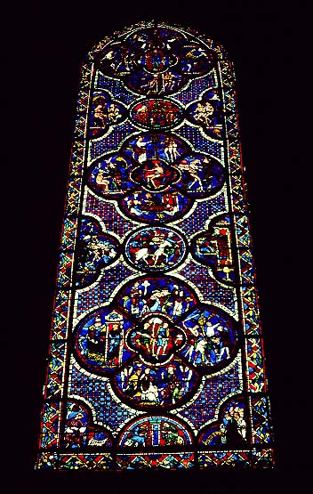
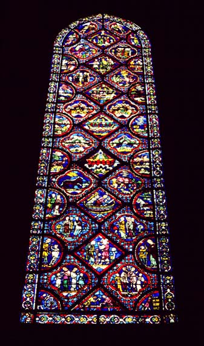
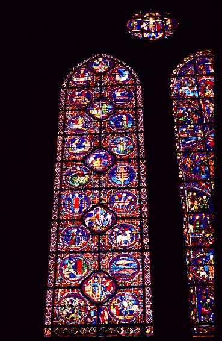

Because of the structural innovations of the rib vault and flying buttress, large areas of the walls of the cathedral could be filled with windows. The majority of the windows were of stained glass, that is, colored glass on which pictures were depicted.
The diagram below lists the subjects of the windows on the lower level all around the cathedral. "M" indicates that the window is not original, but is modern. If the subject of a window is the name of a saint, then the story of that saint's life is depicted in the window. Note that in the chapels around the apse, the majority of the windows are dedicated to saints, whereas in the nave, stories from the Old and New Testaments are also found.
On the upper levels along the nave and around the choir, the glass depicts individual standing saints, prophets, and other biblical figures.
On the walls over the doorways, to the west, south, and north, more elaborate programs of windows are found, topped by a series of windows forming a circle, known as a rose window. The rose windows depict the glorification of the Virgin (north), the Apocalypse (south), and the Last Judgement (west). These subjects correspond to the subjects of the sculpture found on the doorways beneath them.
A fabulous website with a diagram of the cathedral, on which you can click on every window and see an excellent picture and even details of each pane of glass, can be found at http://www.medievalart.org.uk/chartres/Chartres_default.htm.

The north transept windows (below): the Glorification of the Virgin in
the rose window, Saint Anne (the Virgin's mother) holding the Virgin
below, flanked by the Old Testament figures Melchisedek, David,
Solomon, and Aaron. Note the
recurrent motif of gold lilies (they look like crosses) on
blue; this was the symbol of the kings of France, who donated the
window. The gold castles on red are the symbol of the kingdom of
Castile in Spain, the birthplace of the queen of France at the time.

The south transept windows (below):
Apocalypse in the rose, in the
windows beneath are the Virgin and child (center), with the four
evangelists
being
carried on the shoulders of four Old Testament prophets. These
windows were
donated
by the Count of Dreux, who was also the Duke of Brittany; his coat of
arms
appears below the standing figures.


Here are detailed images from the Passion of Christ
window,
above, which must be read from bottom to top
 |
Christ appears to two disciples on the road
(left), the Supper
at Emmaus
(right) Mary Magdalene tells apostles of the
resurrection (left),
Christ appears
to two women (right) Annointing (left), tomb found empty by the
three Mary's
(right) Crucifixion (left), Deposition (right) Betrayal by Judas (left), Flagellation (right)
Last Supper (left), washing of disciples' feet
(right)
|
Here are some more examples of windows from Chartres. Each has a unique color scheme, decorative background, arrangement of shapes containing scenes, etc.


